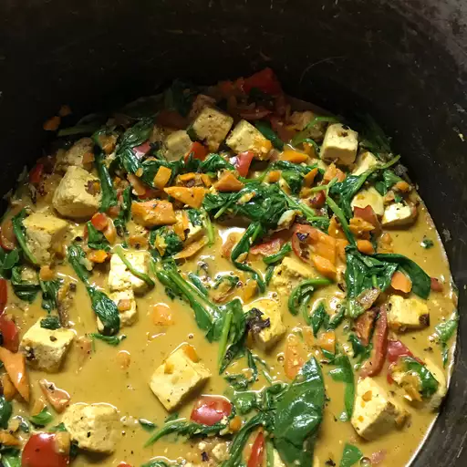

Tofu Stir-Fry With Peanut Sauce

Description
Crispy tofu and colorful vegetables tossed in a creamy peanut sauce, creating a quick, satisfying, and flavorful vegan meal.
Ingredients
- 400 ml light coconut milk
- 60g peanut butter
- 2 tablespoons soy sauce
- 2 tablespoons brown sugar
- 1 tablespoon lime juice
- 1 teaspoon Sriracha sauce
- ½ teaspoon ground chili pepper
- 1 tablespoon olive oil
- 2 carrots, diced
- 1 red bell pepper, diced
- 400 g firm tofu, drained and cut into 2.5 cm cubes
- 4 garlic cloves, minced
- 2 tablespoons minced fresh ginger
- 120 g baby spinach
- 300 g cups cooked brown rice
Steps
-
Whisk coconut milk, peanut butter, soy sauce, brown sugar,
lime juice, Sriracha sauce,
and ground chili pepper together in a bowl until a smooth sauce forms.
-
Heat oil in a large skillet over medium-high heat.
Add carrots and bell pepper; sauté until just tender, 1 to 2 minutes.
Add tofu and sauté until lightly browned, about 4 minutes per side.
Add garlic and ginger; cook and stir until fragrant, about 30 seconds.
-
Pour sauce into the skillet and stir to coat tofu and vegetables.
Cook until flavors combine, about 5 minutes.
Reduce the heat to low, then stir in spinach, 1 cup at a time, until wilted.
Serve over brown rice.
Home